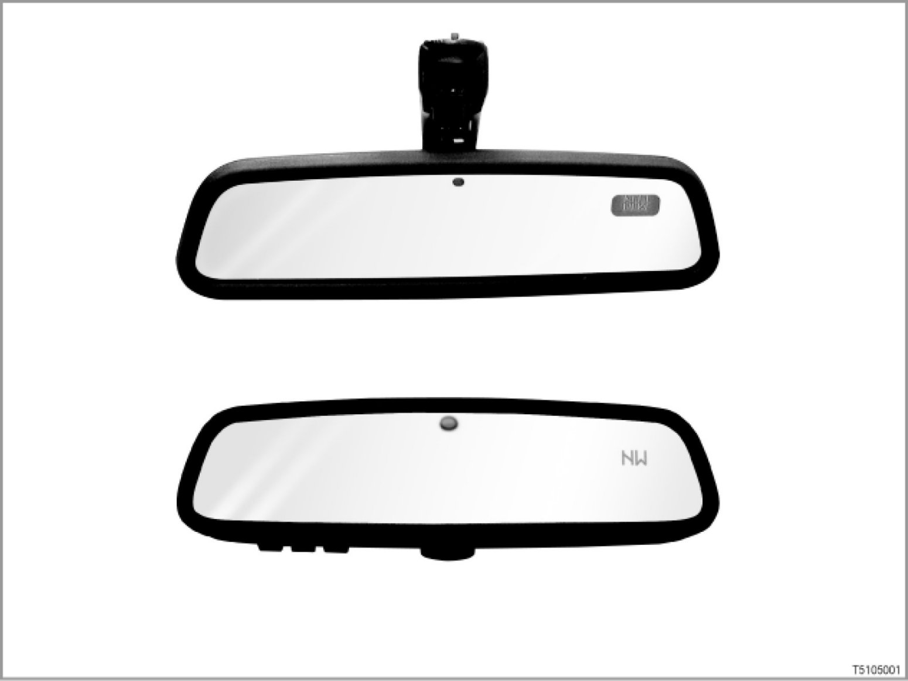

Interior Mirror With Digital Compass E70/E71/E82/E83/E88/E90/E91/E92/,E93
51 01 05 (122)
Interior mirror with digital compass
E70/E71/E82/E83/E88/E90/E91/E92/E93

Introduction
A digital compass in the interior mirror is offered as an optional extra (option 4NA) for the following BMW vehicles:
1 Series (only E82, E88), 3 Series, X3 and X5.
> Up to 09/06
A small LC display at top right in the interior mirror indicates the point of the compass in which the direction of travel is pointing: e.g. SW for South West.
> from 09/06
The display is effected with transmitted light technology. An LC display (window) is no longer needed. The display can be deactivated.
The compass offers an additional benefit especially in the USA. In large cities the streets are frequently arranged according to the points of the compass. The points of the compass are also marked on signposts.
The compass also makes orientation in European cities easier.
[system overview ...]
> E88, E93 from 09/08
The digital compass must be calibrated once with the soft top or retractable hardtop closed, and once with the soft top or retractable hardtop open.
The position of the soft top or retractable hardtop has an effect on the magnetic field in the vehicle. A deflected magnetic field will lead to calibration errors.
Brief description of components
The following components deliver signals for the digital compass:
- Magnetic field sensor
> up to 09/06
The magnetic field sensor is installed in the mirror base. The magnetic field sensor measures the current alignment of the magnetic field. The signal is sent to the control electronics for the compass in the interior mirror.
> from 09/06
The magnetic field sensor is on the PCB in the interior mirror.
- Control electronics for the compass
The interior mirror is electrically connected to the roof control panel (FZD).
The control electronics for the compass are integrated into the board for the interior mirror. The signals from the magnetic field sensor are received by the control electronics. The LCD display is activated directly by the control electronics.
The following components are controlled:
- Display in interior mirror
> up to 09/06
The LC display (window) is situated at top right in the interior mirror.
The points of the compass are presented digitally on the LCD display (LCD: Liquid Crystal Display). The display is divided into eight compass points.
> from 09/06
The point of the compass is displayed in transparent light technology in the interior mirror as well. The display is also at the top right in the interior mirror. The display is divided into eight compass points.
System functions
The following system functions for the digital compass are described:
- Display
- Brightness control of display
- Adjustment of magnetic field zones and calibration
- from 09/06: Further adjustments
- up to 09/06: Fault display
Display
The 8 points of the compass are digitally displayed by abbreviations.
> from 09/06
The display is available in English and German (delivery status: English LHD)
N: - North
NE: - North East Nordosten
E: - East Osten
SE: - South East Sudosten
S: - South
SW: - South West
W: - West
NW: - North West
The changeover between displays is carried out as follows:
- The current vehicle position is the center of a 360° circle.
- The eight points of the compass divide these 360° into sixteen 22.5° segments.
- The display changes over if the direction of travel changes by more than 22.5°.
Brightness control of display
2 photodiodes in the electrochromic interior mirror record the surrounding brightness (1 photodiode for the surrounding brightness coming from the front, 1 photodiode for the surrounding brightness coming from the rear).
The photodiodes deliver the signals for the display brightness control.
The brightness of the display is adjusted by the interior mirror control electronics to suit the surrounding brightness.
> - E88, E93
A darkened interior mirror will become lighter while the soft top or the retractable hardtop is opening and closing.
The overhead control panel (FZD) transmits the signal (roof open or closed) to the control electronics for the interior mirror. The signal is transmitted on the wire that is also used for transmitting the signal for driving in reverse.
Adjustment of magnetic field zones and calibration
The worldwide magnetic field zones are permanently stored in the interior mirror. The magnetic field zones represent the deviations in relation to an ideal magnetic field for earth. The orientation "North" is precisely determined by the magnetic field zones.
The current magnetic field zone may be adjusted according to the geographic location. For example, Germany is located in magnetic field zone "8".
A vehicle has its own magnetic field. This makes it possible for the magnetic field sensor to measure an overlapping of the magnetic field with the earth's magnetic field. This overlapping is "worked out" by calibrating the compass.
A changed magnetic field is normally calibrated "automatically".
The vehicle's magnetic field may change under the following special circumstances:
- Powerful vibration during an accident
- Very large external magnetic field - e.g. if a vehicle passes under a train when travelling through an underpass
However, a manual calibration may speed up the automatic calibration.
For procedure to be followed when setting the magnet field zones as well as manual calibration: see notes for service staff.
from 09/06: Further adjustments
Different time-based adjustment menus can be obtained by means of the adjustment button:
- 0 to 3 seconds: Display ON/OFF
- 3 to 6 seconds: Adjustment of magnetic field zones (0 -15)
- 6 to 9 seconds: Calibration (C)
- 9 to 12 seconds: Left-hand drive or right-hand drive (L or R)
- 12 to 15 seconds: English or German (E or O)
Release the adjustment button when the correct menu is obtained. Select values in the menu by pressing briefly. After approx. 5 seconds the value is stored and the menu is automatically exited.
up to 09/06: Fault display
The LC matrix for the LCD display lights up completely if a system fault develops. A fault is displayed under the following conditions:
- If the vehicle is highly magnetized (2,200-2,500 milligauss), the measuring range of the magnetic field sensor will be exceeded.
- If a fault develops in the circuitry of the magnetic field sensor.
Note: regarding the physical unit "gauss".
Gauss is the unit of measurement for magnetic flux density.
Preconditions for activation
At terminal 15 ON, the display is activated with a test run.
> up to 09/06
During this process, the LC matrix lights up completely (approx. 3 seconds). The digital compass is then switched on.
There is no switch for turning off the LCD display at terminal 15 ON.
Notes for service staff
The following information is available for service staff:
- General notes:
- Diagnosis: ---
- Encoding/programming: ---
Subject to change.